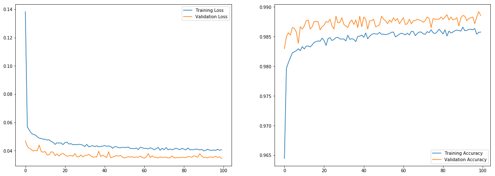

We will use ANNs to diagnose Breast Cancer with some characteristics of the cell nuclei.
Dataset
Download the Dataset
We will use a breast cancer diagnosis dataset from Opeml.org
%%capture
!wget https://www.openml.org/data/get_csv/5600/BNG_breast-w.arff
Explore the Dataset
import pandas as pd
df = pd.read_csv('/content/BNG_breast-w.arff')
df.head()
.dataframe tbody tr th {
vertical-align: top;
}
.dataframe thead th {
text-align: right;
}
- You can see all the features are real numbers, with different range, so they need to be scaled.
- Class has to be changes to number {0, 1}.
Label Encoder
We can use sklearn’s Label Encoder to change malignant and benign to {0, 1}.
from sklearn.preprocessing import LabelEncoder
label_encoder = LabelEncoder()
df.loc[:, 'Class'] = label_encoder.fit_transform(df.loc[:, 'Class'])
df.head()
.dataframe tbody tr th {
vertical-align: top;
}
.dataframe thead th {
text-align: right;
}
Scaling Features
We will use sklearn’s MinMaxScaler to scale the features, it will convert each column into a range of [0,1], you can also specify in which range you want to convert the features, by default its [0,1].
from sklearn.preprocessing import MinMaxScaler
scaler = MinMaxScaler()
df.loc[:, df.columns != 'Class'] = scaler.fit_transform(df.loc[:, df.columns != 'Class'])
df.head()
.dataframe tbody tr th {
vertical-align: top;
}
.dataframe thead th {
text-align: right;
}
Dataframes to Arrays
X = df.loc[:, df.columns != 'Class'].values
y = df.loc[:, 'Class'].values
print(X.shape, y.shape)
(39366, 9) (39366,)
Train-Validation Split
from sklearn.model_selection import train_test_split
X_train, X_val, y_train, y_val = train_test_split(X, y, test_size=0.2, shuffle=True)
print(X_train.shape, X_val.shape, y_train.shape, y_val.shape)
(31492, 9) (7874, 9) (31492,) (7874,)
Model
import tensorflow as tf
from tensorflow import keras
tf.keras.backend.clear_session()
model = tf.keras.Sequential([
tf.keras.layers.Dense(units=50, input_shape=[9], kernel_regularizer=tf.keras.regularizers.l2(0.00001)),
tf.keras.layers.Activation('relu'),
tf.keras.layers.Dropout(0.2),
tf.keras.layers.Dense(units=50, kernel_regularizer=tf.keras.regularizers.l2(0.00001)),
tf.keras.layers.Activation('relu'),
tf.keras.layers.Dropout(0.2),
tf.keras.layers.Dense(units=1),
tf.keras.layers.Activation('sigmoid')
])
model.summary()
Model: "sequential"
_________________________________________________________________
Layer (type) Output Shape Param #
=================================================================
dense (Dense) (None, 50) 500
_________________________________________________________________
activation (Activation) (None, 50) 0
_________________________________________________________________
dropout (Dropout) (None, 50) 0
_________________________________________________________________
dense_1 (Dense) (None, 50) 2550
_________________________________________________________________
activation_1 (Activation) (None, 50) 0
_________________________________________________________________
dropout_1 (Dropout) (None, 50) 0
_________________________________________________________________
dense_2 (Dense) (None, 1) 51
_________________________________________________________________
activation_2 (Activation) (None, 1) 0
=================================================================
Total params: 3,101
Trainable params: 3,101
Non-trainable params: 0
_________________________________________________________________
Training
optimizer = tf.keras.optimizers.Adam(lr=0.001)
model.compile(optimizer=optimizer, loss='binary_crossentropy', metrics=['accuracy'])
tf_history_dp = model.fit(X_train, y_train, batch_size=50, epochs=100, verbose=True, validation_data=(X_val, y_val))
Train on 31492 samples, validate on 7874 samples
Epoch 1/100
31492/31492 [==============================] - 3s 104us/sample - loss: 0.1383 - acc: 0.9645 - val_loss: 0.0470 - val_acc: 0.9830
Epoch 2/100
31492/31492 [==============================] - 3s 101us/sample - loss: 0.0569 - acc: 0.9796 - val_loss: 0.0431 - val_acc: 0.9850
.
.
Epoch 99/100
31492/31492 [==============================] - 3s 97us/sample - loss: 0.0402 - acc: 0.9857 - val_loss: 0.0356 - val_acc: 0.9892
Epoch 100/100
31492/31492 [==============================] - 3s 92us/sample - loss: 0.0408 - acc: 0.9858 - val_loss: 0.0345 - val_acc: 0.9886
import matplotlib.pyplot as plt
plt.figure(figsize=(20,7))
plt.subplot(1,2,1)
plt.plot(tf_history_dp.history['loss'], label='Training Loss')
plt.plot(tf_history_dp.history['val_loss'], label='Validation Loss')
plt.legend()
plt.subplot(1,2,2)
plt.plot(tf_history_dp.history['acc'], label='Training Accuracy')
plt.plot(tf_history_dp.history['val_acc'], label='Validation Accuracy')
plt.legend()
plt.show()

We were able to get an accuracy of 98.8% on Validation set, but in these kind of medical diagnosis tasks even a 0.1% improvement is very important.
Try to improve the performance more.